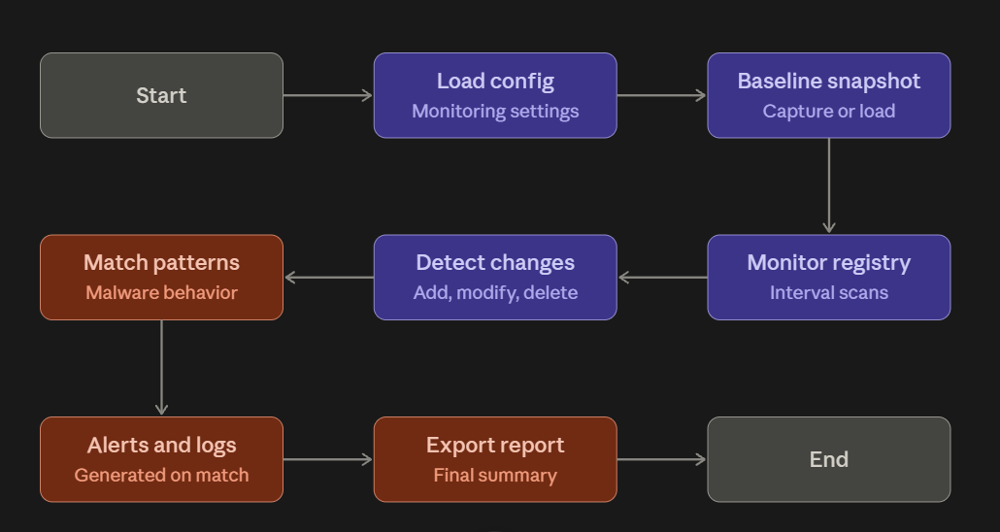
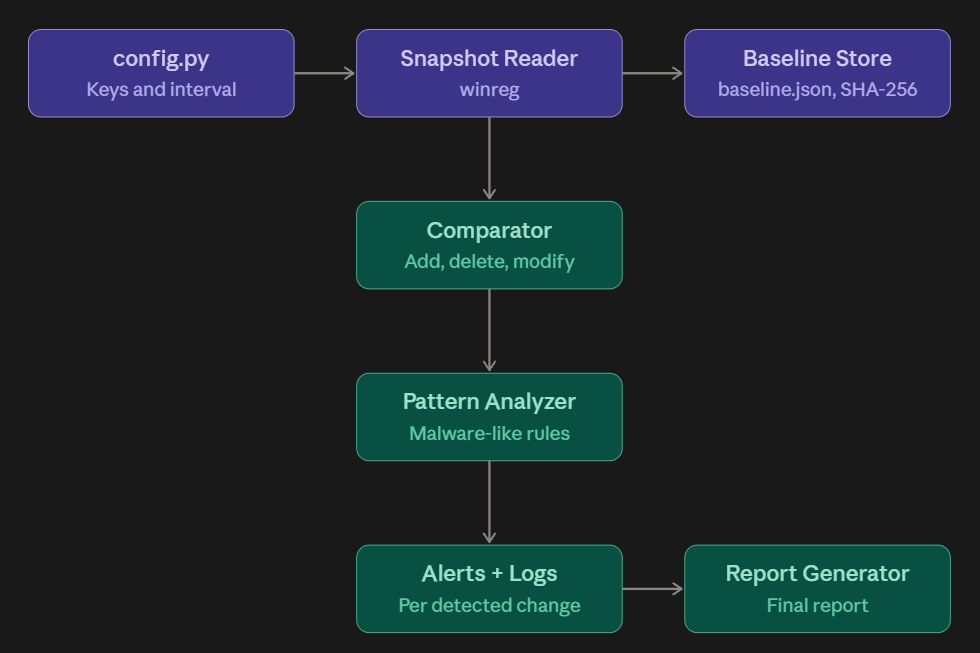

Windows Registry Change Monitoring System
A Python toolkit that monitors sensitive Windows Registry keys, detects unauthorized or malware-like changes, verifies registry integrity against a SHA-256 protected baseline, and generates severity-rated alerts and reports.
Source code (GitHub) Sample report (PDF) Sample report (HTML)
| Category | Example |
|---|---|
| Autorun persistence | New Run/RunOnce entry pointing to a suspicious folder |
| Security tampering | Defender or firewall disabled |
| Shell replacement | Winlogon Shell changed from explorer.exe |
| UAC abuse | EnableLUA set to 0, or a UAC bypass command key |
| Integrity failure | Any value added, deleted, or modified against the baseline |


| Metric | Before tuning | After tuning |
|---|---|---|
| True Positives | 9 | 9 |
| False Negatives | 2 | 2 |
| True Negatives | 4 | 5 |
| False Positives | 1 | 0 |
| Accuracy | 81.3% | 87.5% |
python main.py --baseline python main.py --check python main.py --monitor --interval 10 python main.py --report
All simulations run on a harmless test key, so no real system setting is changed.